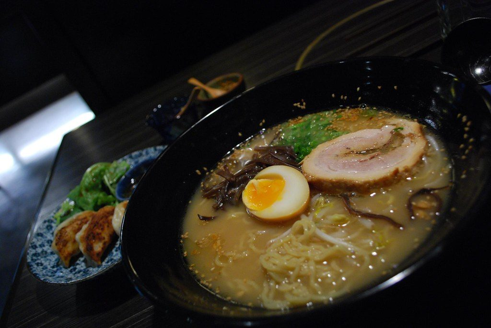
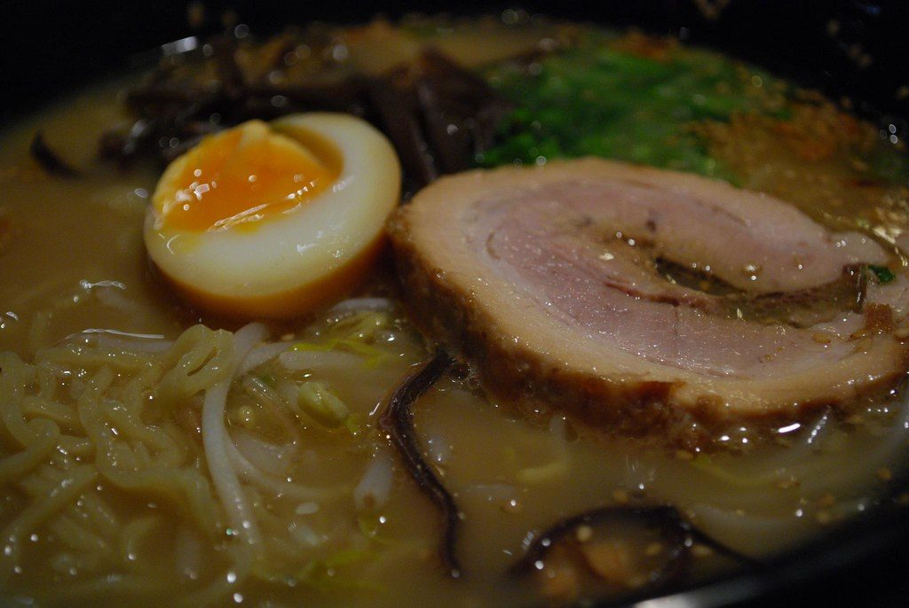
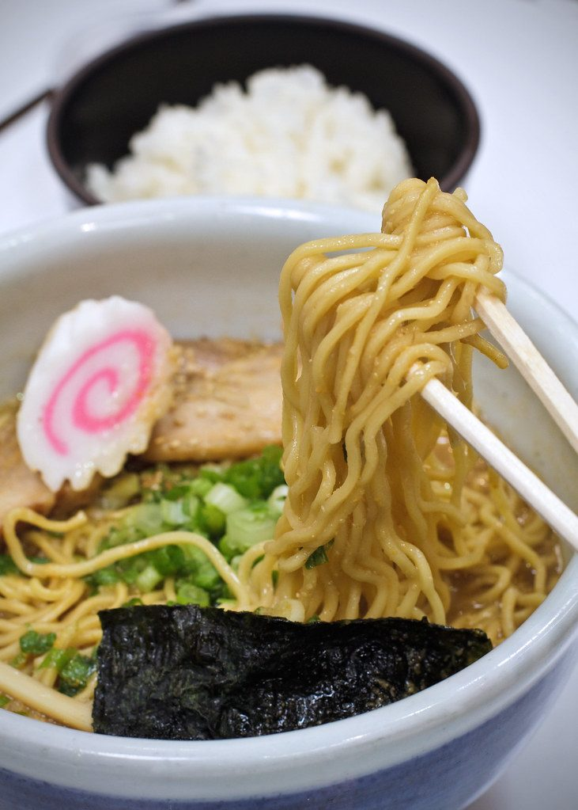
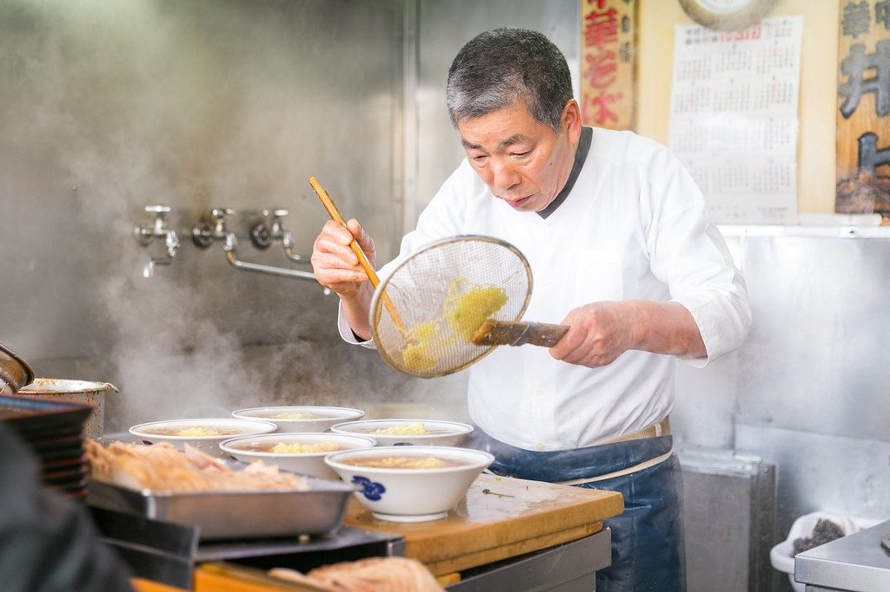
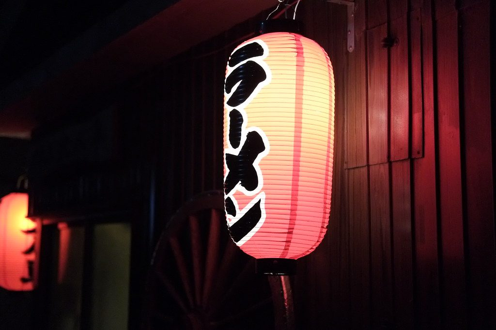

ラーメン Ramen artesano en Compostela
Caldo lento.
Fideo vivo.
Dieciocho horas de caldo, fideo hecho cada mañana y la calma de una barra de Sapporo, a tres minutos de la Catedral.

豚骨 Nuestra especialidad
Tonkotsu de dieciocho horas
Hueso de cerdo celta hervido a fuego vivo toda la noche hasta que el caldo se vuelve blanco y sedoso. Lo terminamos con nuestro tare de soja y lo servimos con chashu glaseado, huevo marinado y un toque de aceite de ajo negro.
- Cerdo celta de granjas de Lugo y Ourense.
- Fideo fino de trigo, amasado esa misma mañana.
- Huevo ajitama marinado 48 horas en soja y mirin.
18horas de caldo
6ramen distintos
22sitios en barra y mesas
2014abriendo en Compostela
注文 ¿Primera vez?
Tu cuenco en tres pasos
Si nunca has pedido ramen, no te preocupes: aquí tienes cómo funciona. Nuestro equipo te ayuda en la barra.
-
Elige el caldo
Tonkotsu, shoyu, miso, shio, tantanmen o el vegano yasai. Cada uno lleva sus propios toppings.
-
Ajusta el picante
De 0 a 3 guindillas. Si dudas, pide el aceite de chile rayu aparte y añádelo a tu gusto.
-
Añade extras
Huevo ajitama, más chashu, nori o un kaedama cuando te quede caldo.


物語 Desde 2014
Una barra de Sapporo en la Rúa da Raíña
Hiroshi Nakamura aprendió el oficio en el local de su familia en Sapporo, heredero del puesto que su abuelo abrió en 1962. En 2009 llegó a Galicia, se enamoró del mar y de su gente, y cinco años después abrió Nami («ola» en japonés) junto a Uxía Varela.
Conoce nuestra historia«Un buen caldo no se puede apurar.»
— Hiroshi Nakamura, cocinero y fundador

予約 Reservas
¿Mesa para esta noche?
Somos un local pequeño y se llena rápido, sobre todo los fines de semana. Reserva online o llámanos.